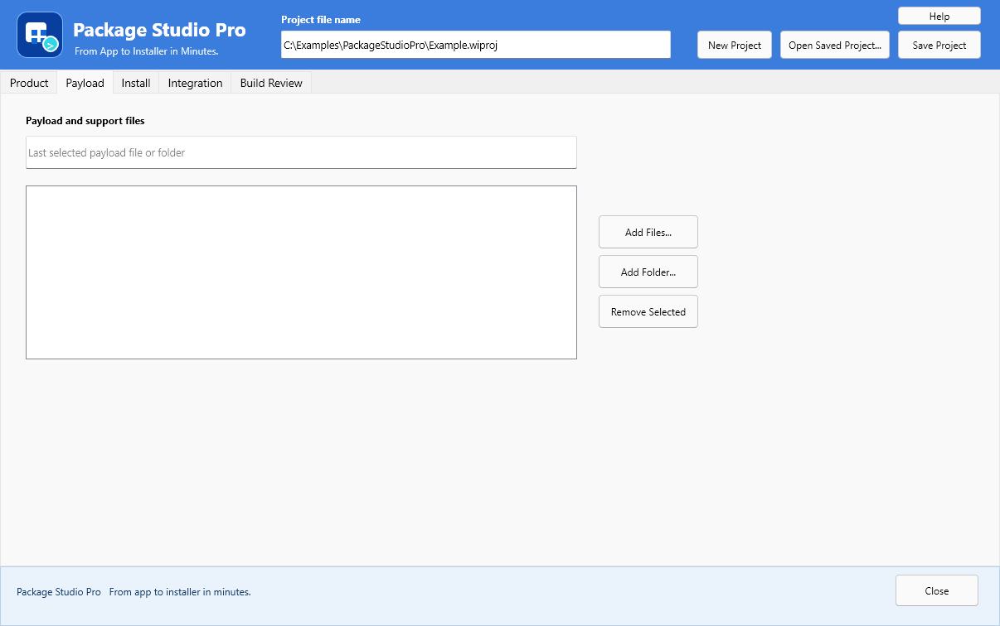

Create a Setup Package
Start Package Studio Pro from its Start menu shortcut, or open PackageStudioPro.exe in its installation folder.
- Open the Product tab and click Browse Source File. Select the Delphi source/project file for the application.
- Confirm the product name. Package Studio Pro fills this from the selected source file name, such as MazeFMX to Maze FMX.
- Confirm Publisher and Version.
- Open the Payload tab. Add support files or folders that should be installed with the application.
- Open the Install tab. Confirm the install folder, shortcut options, and optional license text.
- Open the Integration tab only when the package needs environment variables, PATH entries, file associations, or HKCU registry entries.
- Open the Build & Review tab. Confirm the Project file and Build output folder. The output folder controls where the setup package is exported.
- Click Validate. Resolve any validation messages before building.
- Click Build Package. The final setup executable is named with the product token plus Setup.exe, such as MorseTrainerSetup.exe. It is self-contained and embeds the install manifest and payload.



| Output naming: A product named My Application exports as MyApplicationSetup.exe. The folder also contains embedded-manifest.json, payload, build-report.txt, safety-report.txt, WipRuntime.exe, and an export ZIP. |
|---|